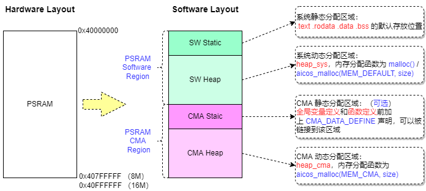

内存使用指南
15 Jan 2024
Read time: 3 minute(s)
硬件上使用 PSRAM 作为 Memory 主要存储单元，其典型大小为 8M/ 16M。
内存布局和使用策略

如图所示，软件会使用以下策略来分配 PSRAM 内存资源，确保关键模块如 MPP 能够高效地获取所需内存，同时也为系统的其他部分提供足够的资源：
- 将 PSRAM 分成以下两个主要区域：
PSRAM CMA Region：专供多媒体模块 MPP 使用。PSRAM Software Region：供系统其他模块使用。
上述区域划分可将 MPP 的动态内存池 (heap_cma) 和系统动态内存池 (heap_sys) 分离，避免 MPP 的内存池碎片化。MPP 的内存分配基本是大块内存，而系统各模块的内存分配是各种尺寸大小都有，如果共享一个内存池容易造成 MPP 大块内存分配失败。
-
将每个 Region 进一步划分成以下子区域：
- 静态分配 Static：编译链接后可确认地址。
- 动态分配 Heap：Heap 内存池运行时确定地址。
最终 PSRAM 空间会被软件划分成四块区域：
-
PSRAM SW Static：系统静态分配区域。默认存放 .text，.rodata，.data 和 .bss 参数，即普通的函数定义和全局变量定义。
-
PSRAM SW Heap：系统动态分配区域，即 heap_sys 内存池。通过以下函数可以从该内存池分配内存。malloc(size); aicos_malloc(MEM_DEFAULT, size); // MEM_DEFAULT = 0
-
PSRAM CMA Static：CMA 静态分配区域，属于可选区域，通常情况下没有配置。通过加上 CMA_DATA_DEFINE 宏声明可以将函数定义和全局变量定义链接到此区域：// 函数定义： void CMA_DATA_DEFINE test_func(void); // CMA_DATA_DEFINE = PSRAM_CMA_DATA_DEFINE // 全局变量定义： CMA_DATA_DEFINE int a = 1; -
PSRAM CMA Heap：CMA 动态分配区域，即 heap_cma 内存池。可以通过以下函数从该内存池分配内存。aicos_malloc(MEM_CMA, size); // MEM_CMA = MEM_PSRAM_CMA
参数配置
通过 scons --menuconfig 命令进入 menuconfig
配置界面，配置下列 Meomry
相关参数：
Board options --->
Mem Options --->-
PSRAM 总大小
PSRAM parameter ---> (0x800000) PSRAM size // 配置 PSRAM 总大小为 8M -
CMA 区域大小
PSRAM parameter ---> (0x200000) Software size in PSRAM // 配置 PSRAM 开头 Software 区域大小为 2M，剩余结尾 CMA 区域大小即为 6M
调试命令
查看内存布局
在工程编译时，可以通过下列命令来查看当前工程的内存布局：
scons --list-mem
输出结果示例如下：
scons: Reading SConscript files ...
output/d12x_demo68-nor_rt-thread_helloworld/images/d12x.elf Memory layout:
Region Start End Length
psram 0x40000000 - 0x41000000 0x01000000
└─ psram_sw 0x40000000 - 0x40200000 0x00200000
└─ psram_sw_static 0x40000000 - 0x400e7ae8 0x000e7ae8
└─ .text 0x40000000 - 0x400a6640 0x000a6640
└─ .rodata 0x400a66b0 - 0x400d6fa8 0x000308f8
└─ .bss 0x400d8c00 - 0x400e7ae8 0x0000eee8
└─ psram_sw_heap 0x400e7ae8 - 0x40200000 0x00118518
└─ .heap_sys 0x400e7ae8 - 0x40200000 0x00118518
└─ psram_cma 0x40200000 - 0x41000000 0x00e00000
└─ psram_cma_heap 0x40200000 - 0x41000000 0x00e00000
└─ .heap_cma 0x40200000 - 0x41000000 0x00e00000查看内存池的运行情况
在系统运行时，可以通过 RT-Thread 下的
free 命令来查看 heap_sys 和
heap_cma
内存池的运行情况：
free
结果输出示例如下：
memheap pool size max used size available size ---------------- ---------- ------------- -------------- heap_cma 8362744 48 8362696 heap_sys 758948 50384 710780